Houseplants
Low-maintenance greenery for apartments, offices, and sunny windowsills.
Plants & Products

Every plant that leaves our greenhouse is grown without synthetic pesticides or fertilizers, so you can bring it home with confidence. Our selection changes with the seasons, and our team can help you match a plant to your light, space, and experience level.
Below is a sample of what you'll typically find in-store. Stop by or reach out through our contact email to check current availability.
Low-maintenance greenery for apartments, offices, and sunny windowsills.
Organic tomato, pepper, and squash seedlings ready for your garden bed.
Basil, mint, rosemary, and more — perfect for containers or raised beds.
Pollinator-friendly plants suited to North Carolina soil and climate.
Not sure where to start? Consider these questions before you shop: